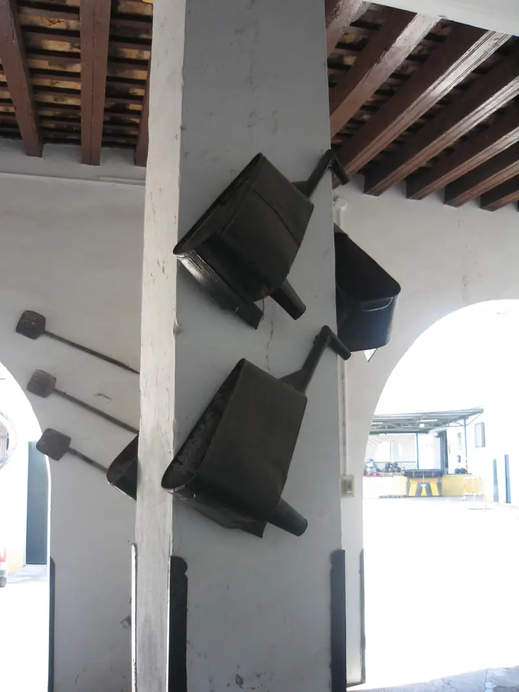
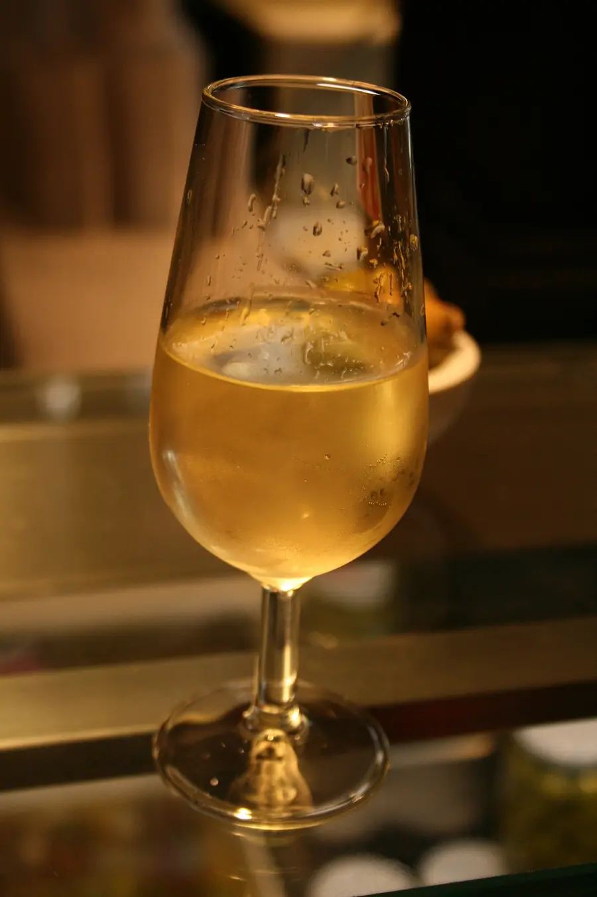

Créditos
Las fotografías vienen de Wikimedia Commons y muestran el mundo del vino de Jerez; ninguna es de esta bodega, que es ficticia. Se han recortado y convertido a WebP; la placa de vinos de la portada y la banda de la página de visitas se muestran en escala de grises. Las versiones recortadas de las imágenes CC BY-SA se comparten con la misma licencia.
Fotografías
| Miniatura | Uso en la web | Original | Autor | Licencia |
|---|---|---|---|---|
 |
Nave de bodega (portada) | Lustau 004An2019 | Anual | CC BY-SA 4.0 |
 |
Tres andanas | Lustau2018016 | Anual | CC BY-SA 4.0 |
 |
Velo de flor | Velo de Flor | Caballero 1830 | CC BY-SA 3.0 |
 |
Venencia y copa (recorte sin la persona) | Venenciadora serving Sherry | Jesus Solana | CC BY 2.0 |
 |
Canoas | Canoas bodega sanlúcar brrameda | Antonio M. Romero Dorado | CC BY-SA 4.0 |
 |
Viñas sobre albariza | Viñedos en albariza de Jerez - P1240123 | El Pantera | CC BY-SA 4.0 |
 |
Copa de fino | Copita de fino-2009 | Tamorlan | CC BY-SA 3.0 |
 |
Catavinos sobre una bota | Catavinos | Senormunoz | CC BY-SA 4.0 |
 |
Catavino al sol (recorte sin la botella) | Catavino con vino fino de Chiclana | PEPE GADEIRAS | CC BY-SA 4.0 |
 |
Lámina de palomino | Pomological Watercolor POM00006300 (1900) | Bertha Heiges (USDA) | Dominio público |


Dibujos
Las botas de la solera, las marcas de tiza, el plano y el icono están dibujados en SVG para esta web.
Fuentes
Anton, de Vernon Adams, y Work Sans, de Wei Huang, con licencia SIL Open Font License 1.1. Se sirven desde la propia web, sin llamadas a terceros.
Código
HTML, CSS y JavaScript escritos a mano, sin librerías, con licencia MIT.